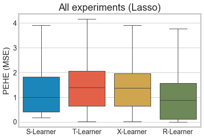
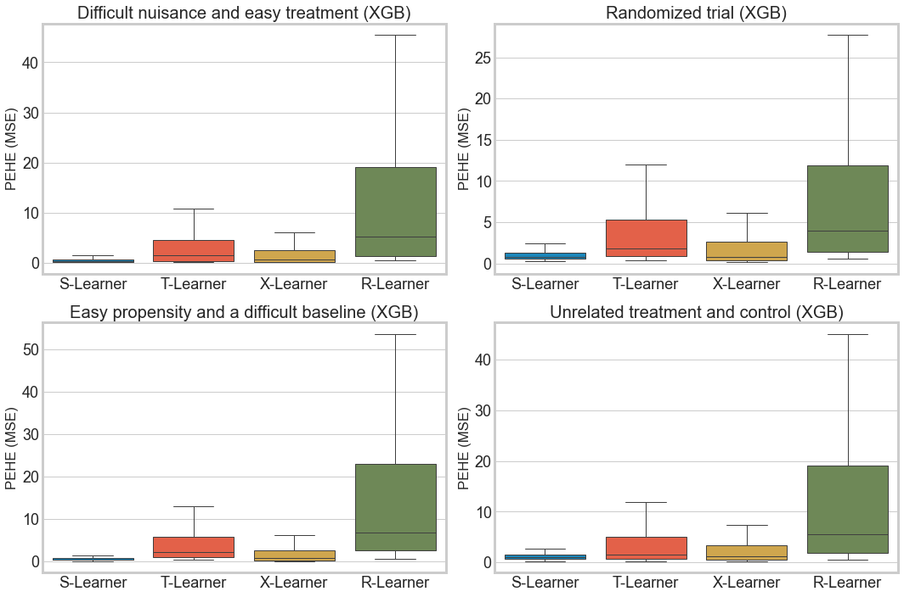

Comparing meta-learners across simulation setups
Contents
Comparing meta-learners across simulation setups#
This notebook compares X-, R-, T- and S-learners across the simulation setups discussed by Nie and Wager (2020). Note that the experiments don’t include the parameter tuning described in the paper.
import numpy as np
import pandas as pd
from causalml.inference.meta import BaseSRegressor
from causalml.inference.meta import BaseTRegressor
from causalml.inference.meta import BaseXRegressor
from causalml.inference.meta import BaseRRegressor
from causalml.dataset import synthetic_data
from sklearn.metrics import mean_squared_error
from sklearn.model_selection import train_test_split, cross_val_predict
from sklearn.base import clone
from sklearn.linear_model import LogisticRegression, Lasso
from xgboost import XGBRegressor
from copy import deepcopy
from itertools import product
from tqdm import tqdm
import matplotlib.pyplot as plt
import seaborn as sns
sns.set_style('whitegrid')
import causalml
print(causalml.__version__)
0.11.1
def run_experiments(n_list, p_list, s_list, m_list, learner_dict, num_iter,
propensity_learner):
result_list = []
for i in tqdm(range(num_iter)):
for n, p, s, m, learner in product(n_list, p_list, s_list, m_list, learner_dict.keys()):
y, X, W, tau, _, _ = synthetic_data(mode=m, n=n, p=p, sigma=s)
X_train, X_test, W_train, _, y_train, _, _, tau_test = train_test_split(
X, W, y, tau, test_size=0.2, random_state=111)
if propensity_learner is not None:
em = clone(propensity_learner)
em.fit(X_train, W_train)
e_hat_train = cross_val_predict(em, X_train, W_train, method='predict_proba')[:, 1]
e_hat_test = em.predict_proba(X_test)[:, 1]
model = deepcopy(learner_dict[learner])
model.fit(X=X_train, treatment=W_train, y=y_train, p=e_hat_train)
hat_tau = model.predict(X_test, p=e_hat_test)
pehe = mean_squared_error(tau_test, hat_tau)
result_list.append([n, p, s, m, learner, pehe])
cols = ['num_samples', 'num_features', 'sigma', 'sim_mode', 'learner', 'pehe']
df_res = pd.DataFrame(result_list, columns=cols)
return df_res
Lasso based experiments#
# Simulation params from Nie and Wager (2020)
n_list = [100, 500]
p_list = [6, 12]
s_list = [0.5, 1, 2, 4]
m_list = [1, 2, 3, 4]
num_iter = 100
learner_dict = {
'S-Learner': BaseSRegressor(learner=Lasso()),
'T-Learner': BaseTRegressor(learner=Lasso()),
'X-Learner': BaseXRegressor(learner=Lasso()),
'R-Learner': BaseRRegressor(learner=Lasso())
}
propensity_learner = LogisticRegression(penalty='l1', solver='liblinear')
df_res_lasso = run_experiments(n_list, p_list, s_list, m_list, learner_dict, num_iter, propensity_learner=propensity_learner)
100%|██████████| 100/100 [04:00<00:00, 2.40s/it]
df_res_lasso.groupby(['learner', 'sim_mode'])['pehe'].median()
learner sim_mode
R-Learner 1 0.135057
2 1.228229
3 0.056223
4 1.769802
S-Learner 1 0.290226
2 1.911610
3 1.000000
4 1.696009
T-Learner 1 0.214197
2 1.229950
3 2.133935
4 1.848652
X-Learner 1 0.213853
2 1.257568
3 1.910579
4 1.826252
Name: pehe, dtype: float64
data_generation_descs = {
1: 'Difficult nuisance and easy treatment',
2: 'Randomized trial',
3: 'Easy propensity and a difficult baseline',
4: 'Unrelated treatment and control'
}
sns.boxplot(x='learner', y='pehe', data=df_res_lasso, linewidth=1, showfliers=False)
plt.ylabel('PEHE (MSE)')
plt.xlabel('')
plt.title('All experiments (Lasso)')
plt.show()

fig, axs = plt.subplots(2, 2, figsize=(15, 10))
axs = axs.ravel()
for i, m in zip(range(4), m_list):
sns.boxplot(x='learner', y='pehe', data=df_res_lasso.loc[df_res_lasso['sim_mode'] == m], linewidth=1, showfliers=False, ax=axs[i])
axs[i].title.set_text(data_generation_descs[m] + ' (Lasso)')
axs[i].set_ylabel('PEHE (MSE)')
axs[i].set_xlabel('') # Hack
axs[i].tick_params(labelsize=18)
plt.tight_layout()

Gradient boosting based experiments#
n_list = [500, 1000]
p_list = [6, 12]
s_list = [0.5, 1, 2, 4]
m_list = [1, 2, 3, 4]
num_iter = 100
learner_dict = {
'S-Learner': BaseSRegressor(learner=XGBRegressor(n_jobs=-1)),
'T-Learner': BaseTRegressor(learner=XGBRegressor(n_jobs=-1)),
'X-Learner': BaseXRegressor(learner=XGBRegressor(n_jobs=-1)),
'R-Learner': BaseRRegressor(learner=XGBRegressor(n_jobs=-1))
}
propensity_learner = LogisticRegression(penalty='l1', solver='liblinear')
df_res_xgb = run_experiments(n_list, p_list, s_list, m_list, learner_dict, num_iter, propensity_learner=propensity_learner)
100%|██████████| 100/100 [17:46:40<00:00, 640.00s/it]
df_res_xgb.groupby(['learner', 'sim_mode'])['pehe'].median()
learner sim_mode
R-Learner 1 5.178797
2 3.969635
3 6.766369
4 5.581396
S-Learner 1 0.364403
2 0.802687
3 0.507753
4 1.030971
T-Learner 1 1.401733
2 1.829172
3 2.266735
4 1.623793
X-Learner 1 0.712560
2 0.818282
3 0.864205
4 1.196562
Name: pehe, dtype: float64
sns.boxplot(x='learner', y='pehe', data=df_res_xgb, linewidth=1, showfliers=False)
plt.ylabel('PEHE (MSE)')
plt.xlabel('')
plt.title('All experiments (XGB)')
plt.show()

fig, axs = plt.subplots(2, 2, figsize=(15, 10))
axs = axs.ravel()
for i, m in zip(range(4), m_list):
sns.boxplot(x='learner', y='pehe', data=df_res_xgb.loc[df_res_xgb['sim_mode'] == m], linewidth=1, showfliers=False, ax=axs[i])
axs[i].title.set_text(data_generation_descs[m] + ' (XGB)')
axs[i].set_ylabel('PEHE (MSE)')
axs[i].set_xlabel('') # Hack
axs[i].tick_params(labelsize=18)
plt.tight_layout()
